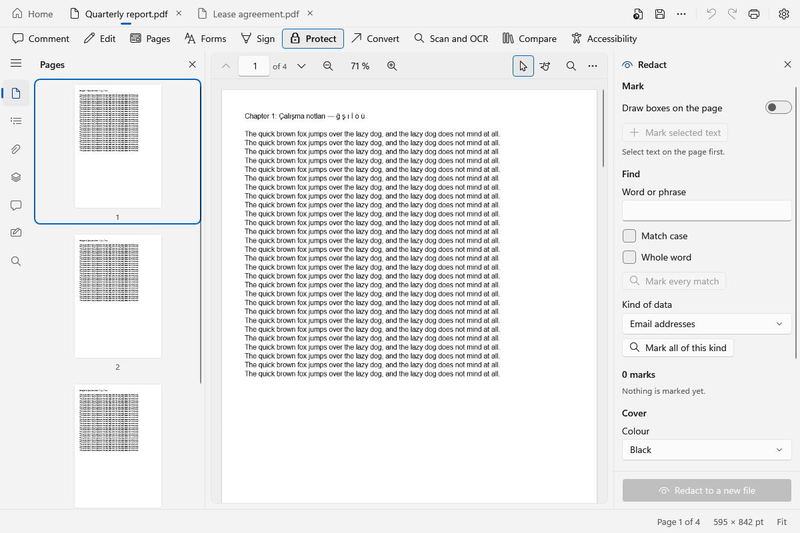
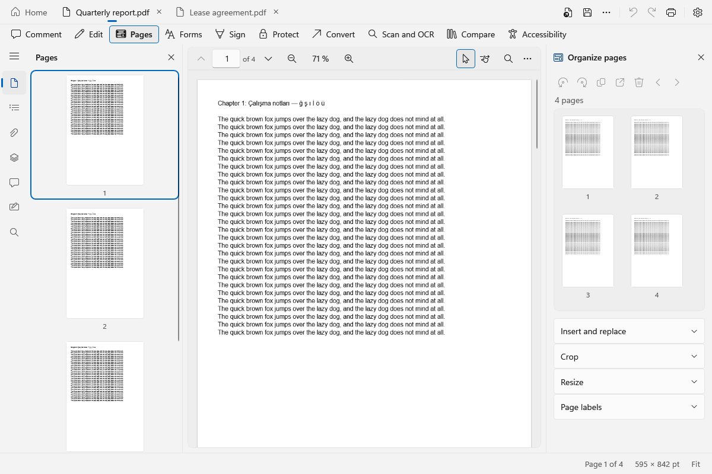
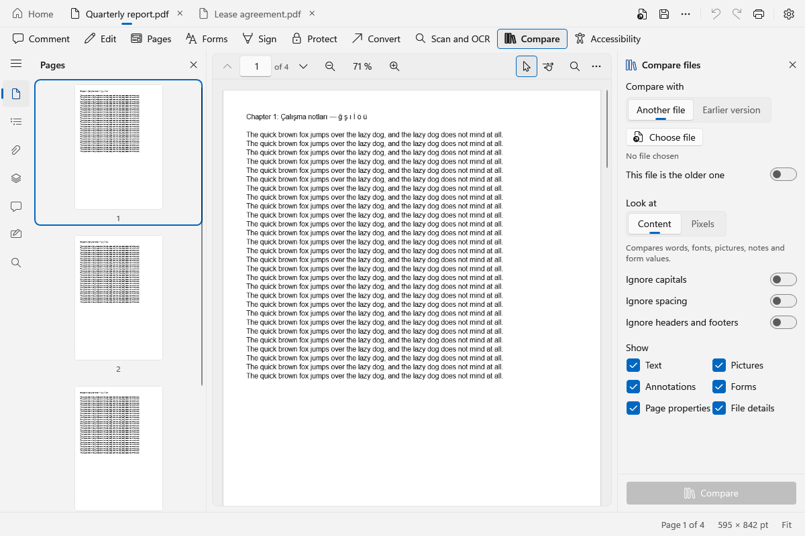
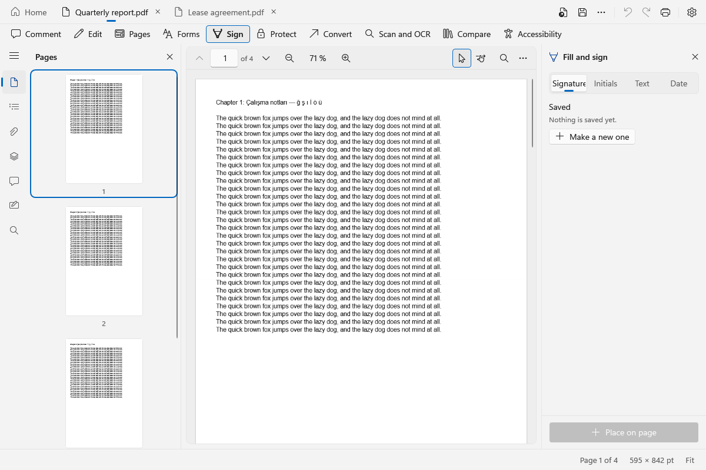

Open a PDF, change it, send it on.
Lazy PDF reads and edits PDF files on Windows. You can fill forms, sign, cross out private details for good, rearrange pages, turn a file into Word or Excel, and see what changed between two versions. It is free, it works without an internet connection, and there is no account.
Not released yet. There is nothing to download. So far Lazy PDF has been checked by its automated tests and by drawing its windows off screen, not by people using it on their own files.
What it does
Each job is a tool on the strip under the tabs. Pick one and its options open on the right of the page.
- Comment: highlight, draw and leave notes. Measure distances and areas on a page.
- Edit the words and pictures already on a page. Add stamps, watermarks, page numbers and headers.
- Rotate, move, delete, crop and extract pages. Join files, or split one.
- Fill in forms, and add or change form fields.
- Sign with a drawn signature, or with a certificate from Windows or a PFX file, and check the signatures already in a file.
- Protect a file with a password and decide what others may do with it.
- Redact: remove text and pictures from the file for good, by selection, by phrase or by kind of data such as email addresses.
- Clean for sharing: take out hidden data before a file goes to someone else.
- Make a file smaller and see where its space goes.
- Export to Word, Excel, PowerPoint, HTML, text or pictures. Create a PDF from pictures, text or the clipboard.
- Batch: do the same to every file in a folder, and watch a folder for new ones.
- Make scanned pages searchable with the text recognition built into Windows.
- Compare two files, or a file with an earlier version of itself.
- Check a file for screen readers and fix what is missing. Check it against PDF/A and convert it; a converted file passes Lazy PDF's own checks.
Changes are kept as steps you can undo one at a time. While you work, an unsaved copy is kept on your computer so a crash does not lose the edits, and the app offers it back the next time it starts.
Screenshots
Taken from the app with sample files made for testing. The app follows the Windows light or dark setting, or you can choose one.




Offline, and nothing sent
Lazy PDF does not need an account and has no ads, analytics, crash reports or update check. Your files are read and changed on your computer.
The one thing that uses the network is signing with a certificate, and only when you ask for a time stamp or for validation data to be added. The privacy page lists exactly what is sent and to whom.
Platforms
Windows
Windows 10 version 2004 or later. Planned for the Microsoft Store.
Mac
There is no Mac version yet. It is planned for the Mac App Store.
Lazy PDF is a sister app of Lazy Scan and Lazy Print. The Print button hands the open file to Lazy Print when it is installed and uses the Windows print dialog otherwise. The Scan tile starts Lazy Scan; scanning straight into an open file is not done yet.
Support
Questions and problems go to support@alazy.app.